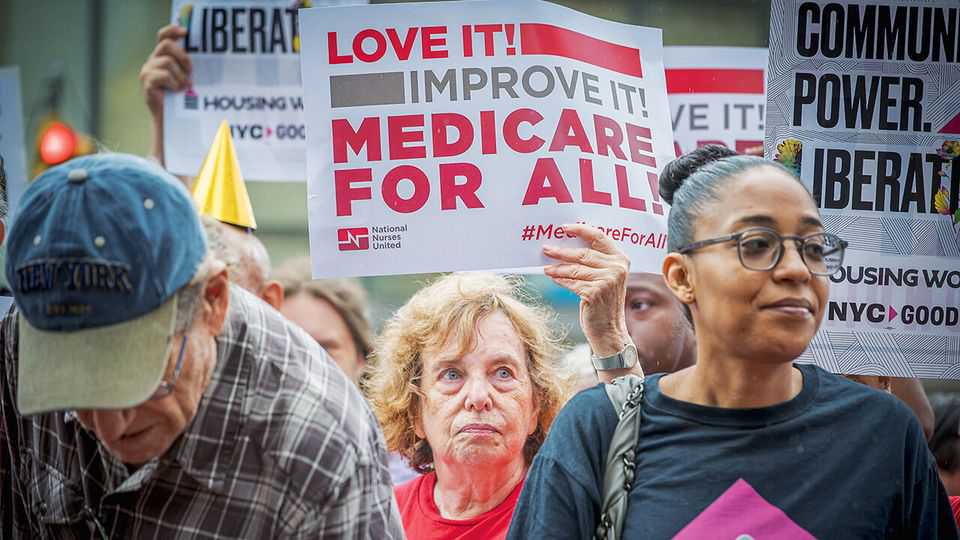
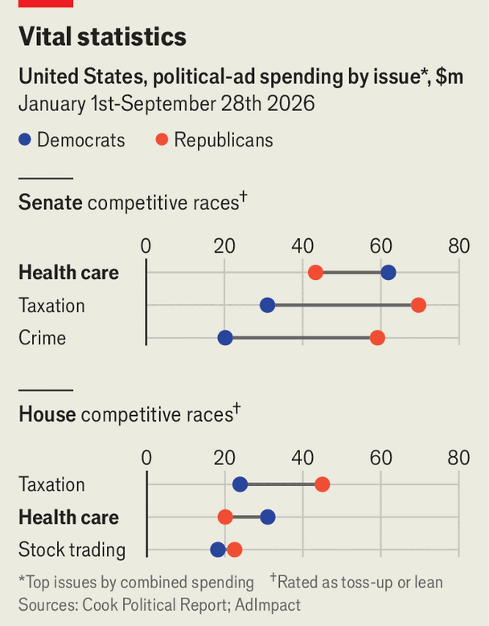

What’s even more politically toxic than high prices at the pump?
The soaring cost of health care is a problem for Republicans

Oct 1st 2026
ON THE NIGHT of the midterm elections in 2018, Nancy Pelosi, preparing to reclaim her position as the Speaker of the House of Representatives, said Democrats’ victory was about two things: restoring Congress as a check to Donald Trump, then in his first term, and stopping “assaults” on health care. The year before, Republicans had attempted to repeal Barack Obama’s signature health-care law, the Affordable Care Act (ACA). Democrats jumped on the issue; one analysis found that it was the most common topic of their ads in the months before the election.
This year, health care is once again a vulnerability for Republicans. In one July poll from KFF, a health-research outfit, more Americans reported being anxious about affording health care than petrol, housing or food. In a March poll from Gallup, 61% of Americans said they worried a great deal about the availability and affordability of health care, more than about the economy or inflation. So, as part of a broader message on affordability, health care is again the most common issue in Democrats’ campaign ads. Candidates have varied ideas of how to respond—the progressive wing has renewed its push for universal coverage, while moderates want more incremental reform. But they are hoping that anxiety over health costs will be enough to secure victory.
Unlike in 2018, the ACA is now unravelling, due to Republicans’ cuts to subsidies for insurance bought on its exchanges and to Medicaid, a health-care programme for the poor. However, there are broader pressures on health care, too. Insurance prices in 2026 rose at their fastest rate in 15 years, driven by expensive new treatments for obesity and cancer, as well as the rapid growth in artificial-intelligence tools that help hospitals and clinics maximise charges. The outlook may darken in October, when the half of the population that obtains insurance through their jobs will receive notices of costs for 2027. Marsh’s, a consultancy, expects prices for employer-sponsored health insurance to rise by an average of 8%, even faster than this year.

Democrats have seized on this. Since January, the party has spent $93m on ads that emphasise health care in competitive races for Congress, by far the most on any topic, according to AdImpact, which tracks advertising, and the Cook Political Report, which analyses elections (see chart). Ads elide various policy questions to make a general condemnation of Republicans’ record on health. One spot against Dan Sullivan, a Republican senator in Alaska, says he voted “to cut health care for thousands of Alaskans”, then adds, “Alaskans can’t afford Dan Sullivan’s votes to raise the cost of health care.”
Republicans emphasise Mr Trump’s efforts to lower drug prices and try to reframe cuts as a way to fight fraud and waste. Jon Husted, a senator from Ohio facing a tough re-election campaign, is among those to argue that falling Medicaid rolls reflect Republican crackdowns on “people who are illegally on Medicaid that are not eligible”. But in a sign of Mr Trump’s concern about the issue, in September he announced $500 “refunds” to the nearly 1m people who buy insurance through federal marketplaces and are no longer eligible for subsidies (the 3m people who have dropped marketplace insurance will receive no cash). Voters are unconvinced. In a poll from the New York Times and Siena College, 60% said they trusted Democrats on health care, the most of any issue. Another poll from the Cook Political Report found that 56% of swing district voters are worried more about cuts than allowing fraud, waste and abuse.
How Democrats, once in power, could help Americans afford good care is much less clear. Abdul El-Sayed, the Democratic candidate for the Senate in Michigan, has centred his campaign on Medicare For All, a form of single-payer health care championed by Bernie Sanders, a senator. Dr El-Sayed says his primary “was a referendum on whether or not we want health care here or bombs somewhere else.” Others favour gradual change. Roy Cooper, running to represent North Carolina in the Senate, wants to reverse cuts to the ACA. As the Democratic presidential primary begins, competing ideas for American health care will take centre stage. But their first goal is to win in November.■
Stay on top of American politics with The US in brief, our daily newsletter with fast analysis of the most important political news, and Checks and Balance, a weekly note that examines the state of American democracy and the issues that matter to voters.